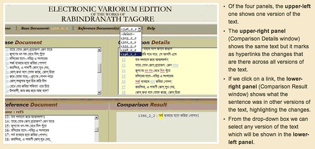

Seminar: Tagore digital editions and Bengali textual computing
Professor Sukanta Chaudhuri gave a very interesting talk yesterday on the scope, methods, and aims of 'Bichitra' (literally, 'the various'), the ongoing project for an online variorum edition of the complete works of Rabindranath Tagore in English and Bengali. The talk (part of this year's DDH research seminar) highlighted a number of issues I wasn't very familiar with, so in this post I'm summarizing them and then offering a couple of possible suggestions.
Sukanta Chaudhuri is Professor Emeritus at Jadavpur University, Kolkata (Calcutta), where he was formerly Professor of English and Director of the School of Cultural Texts and Records. His core specializations are in Renaissance literature and in textual studies: he published The Metaphysics of Text from Cambridge University Press in 2010. He has also translated widely from Bengali into English, and is General Editor of the Oxford Tagore Translations.
Rabindranath Tagore (1861 – 1941), the first nobel laureate of Asia, was arguably the most important icon of modern Indian Renaissance. This recent project on the electronic collation of Tagore texts, called 'the Bichitra project', is being developed as part of the national commemoration of the 150th birth anniversary of the poet (here's the official page). This is how the School of Cultural Texts and Records summarizes the project's scope:
The School is carrying out pioneer work in computer collation of Tagore texts and creation of electronic hypertexts incorporating all variant readings [...] we have now undertaken a two-year project entitled "Bichitra" for a complete electronic variorum edition of all Tagores works in English and Bengali. The project is funded by the Ministry of Culture, Government of India, and is being conducted in collaboration with Rabindra-Bhavana, Santiniketan.
The target is to create a website which will contain (a) images of all significant variant versions, in manuscript and print, of all Tagores works; (b) text files of the same; and (c) collation of all versions applying the "Pathantar" software. To this end, the software itself is being radically redesigned. Simultaneously, manuscript and print material is being obtained and processed from Rabindra-Bhavana, downloaded from various online databases, and acquired from other sources. Work on the project commenced in March 2011 and is expected to end in March 2013, by which time the entire output will be uploaded onto a freely accessible website.
A few interesting points
- Tagore, as Sukanta noted, "wrote voluminously and revised extensively". From a DH point of view, this means that creating a comprehensive digital edition of his works would require a lot of effort—much more than what we could easily pay people for if we wanted to mark up all of this text manually. For this reason, it is fundamental to find semi-automatic methods for aligning and collating Tagore's texts, e.g., the "Pathantar" software. What follows is a screenshot of the current collation interface.

- The Bengali language, which Tagore used, is widely spoken around the world (it is actually one of the most spoken languages, with nearly 300 million total speakers). However, this language poses serious problems for a DH project. In particular, the writing system is extremely difficult to parse using traditional OCR technologies: its vowel graphemes are mainly realized not as independent letters but as diacritics attached to consonant letters. Furthermore, clusters of consonants are represented by different and sometimes quite irregular forms. Thus, learning to read is complicated by the sheer size of the full set of letters and letter combinations, numbering about 350 (from Wikipedia).
- One of the critical points that emerged during the discussion had to do with the visual presentation of the collation software's results. Given the large volume of text editions they're dealing with and the potentially vast amount of variations between editions, a powerful and interactive visualization mechanism seems to be strongly needed. However, it's not clear what the possible approaches are on this front.
- Textual computing, Sukanta pointed out, is not as developed in India as it is in the rest of the world. As a consequence, in the context of the "Bichitra" project, widely used approaches based on TEI and XML technologies haven't been investigated enough. The collation software mentioned above obviously marks up the text in some way; however, this markup remains hidden to the user and is most likely not compatible with other standards. More work would thus be desirable in this area, particularly within the Indian subcontinent.
Food for thought
-
On the visualization of collation results: Some inspiration could be found in the types of visualizations normally used in version control software systems, where multiple and alternative versions of the same file must be tracked and shown to users. For example, we could look at the visualizations available on GitHub (a popular code-sharing site), which are described in this blog post and demonstrated via an interactive tool on this webpage. Here's a screenshot:
The situation is strikingly similar—or isn't it? Would it be feasible to reuse one of these approaches with textual sources? Another relevant visualization is the one used by popular file-comparison software (e.g., File Merge on a Mac) for showing differences between two files:
-
On using language technologies with Bengali: I did a quick survey of what's available online and (quite unsurprisingly, considering the reputation Indian computer scientists have) found several research papers that seem highly relevant. Here are a few of them:
- Asian language processing: current state-of-the-art [text] - Research report on Bengali NLP engine for TTS [text] - The Emile corpus, containing fourteen monolingual corpora, including both written and (for some languages) spoken data for fourteen South Asian languages [homepage] - A complete OCR system for continuous Bengali characters [text] - Parsing Bengali for Database Interface [text] - Unsupervised Morphological Parsing of Bengali [text]
-
On open-source softwares that appear to be usable with Bengali text. Not a lot of stuff, but more than enough to get started (the second project in particular seems pretty serious):
- Open Bangla OCR - A BDOSDN (Bangladesh Open Source Development Network) project to develop a Bangla OCR - Bangla OCR project, mainly focused on the research and development of an Optical Character Recognizer for Bangla / Bengali script